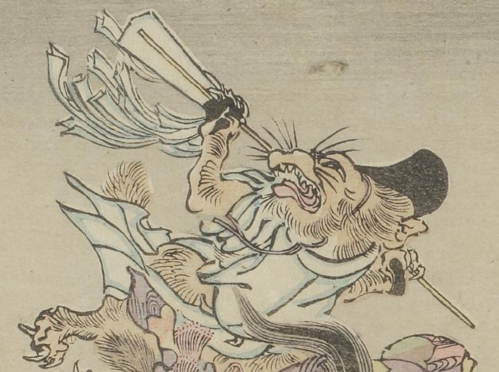

← 图鉴索引

神主姿の狐。白張りを着て烏帽子を付け、大きな幣帛を肩に担いでいる。
出典：親書誌：U426_nichibunken_0093：暁斎百鬼画談；ギョウサイヒャッキガダン／日付：2006／資源識別子：U426_nichibunken_0093_0029_0000
Copyright (c)2010- International Research Center for Japanese Studies, Kyoto, Japan. All rights reserved.